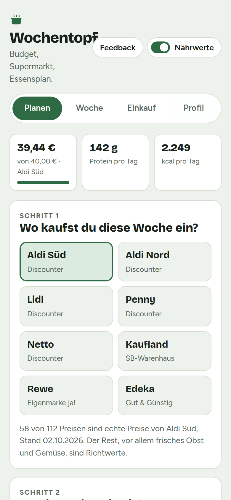
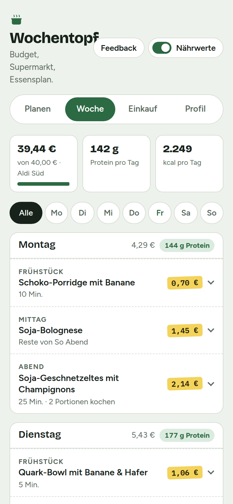
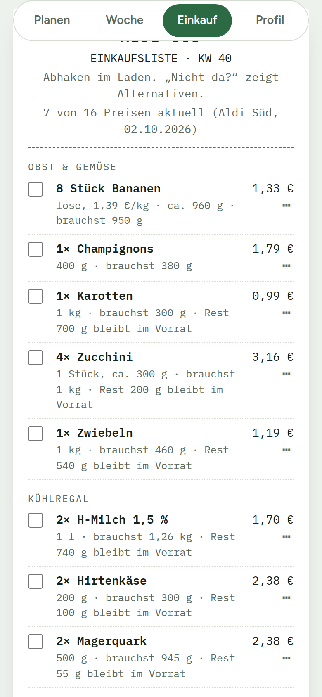

Testphase
Wochentopf
Dein Wochenbudget rein, dein Supermarkt rein: Wochentopf plant dir eine Woche Essen und schreibt die Einkaufsliste dazu. Kostenlos, ohne Anmeldung, auch offline.
App öffnen


Was Wochentopf kann
Passt zu deinem Budget
Ob 30 oder 90 € die Woche: Der Plan nutzt dein Geld, ohne drüber zu gehen.
Für deinen Supermarkt
Aldi, Lidl, Penny, Netto, Kaufland, Rewe oder Edeka, mit Preisen der Eigenmarken.
Proteinreich, vegetarisch, vegan
Über 160 Gerichte. Was du nicht magst oder verträgst, kommt nicht vor.
Für WG und Familie
Personen anlegen, bei jeder Mahlzeit wählen, wer mitisst. Die Mengen passen sich an.
Meal-Prep eingebaut
Abends doppelt kochen, mittags die Reste mitnehmen. Weniger Aufwand, weniger Kosten.
Nichts mehr wegwerfen
Reste wie Reis oder Nudeln landen im Vorrat und werden nächste Woche zuerst verplant.
So kommt die App auf dein Handy
iPhone
- Diese Seite in Safari öffnen und auf „App öffnen“ tippen
- Unten auf das Teilen-Symbol tippen
- „Zum Home-Bildschirm“ wählen
Android
- Diese Seite in Chrome öffnen und auf „App öffnen“ tippen
- Oben rechts auf die drei Punkte tippen
- „App installieren“ oder „Zum Startbildschirm hinzufügen“
Danach startet Wochentopf wie eine normale App und funktioniert auch im Supermarkt ohne Empfang.
Hilf beim Testen
Wochentopf ist neu. Nutze die App ein paar Wochen und sag ehrlich, was taugt und was nicht: Oben in der App gibt es dafür den Knopf „Feedback“. Jede Rückmeldung fließt direkt in die nächste Version.
Datenschutz
Deine Pläne, Vorlieben, Personen und Preise werden nur auf deinem Handy gespeichert. Es gibt kein Konto und keinen Server, der deine Daten sieht.
Um zu sehen, ob die App genutzt wird, zählt Wochentopf anonym, wie oft sie geöffnet wird und welche Funktionen benutzt werden, zum Beispiel „Plan erstellt“. Dafür wird der Dienst GoatCounter genutzt. Er setzt keine Cookies, speichert keine IP-Adressen und erkennt dich nicht wieder. Inhalte wie deine Gerichte, Personen oder Preise werden nie übertragen.
Die Preise in der App kommen aus öffentlich zugänglichen Quellen. Sie werden einmal pro Woche aktualisiert und mit deiner App geladen. Dabei werden keine Daten von dir übertragen.
Gehostet bei GitHub Pages (GitHub Inc.). Beim Aufruf verarbeitet GitHub technisch notwendige Verbindungsdaten wie deine IP-Adresse, siehe die Datenschutzerklärung von GitHub.